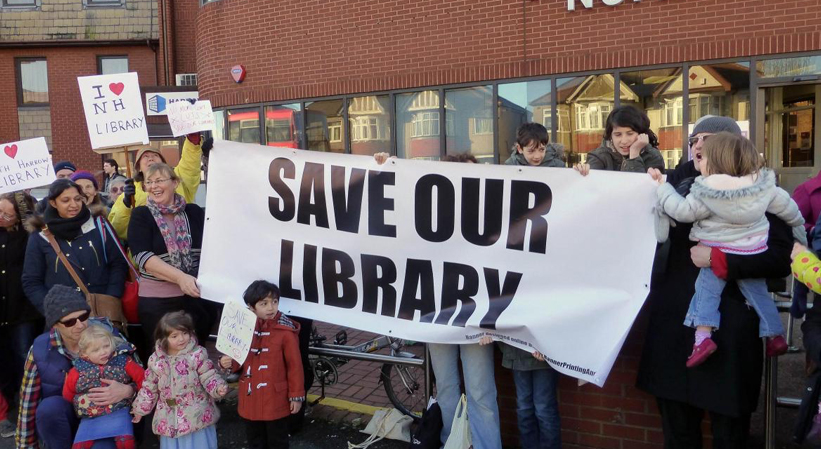
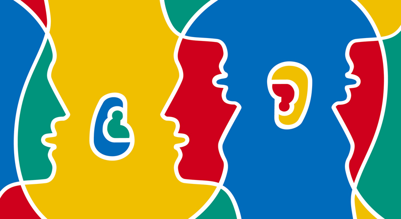

5
C’est le contenu qui compte.
Je me fiche – je ne crois pas que ce soit important – que ces livres soient sur papier ou numériques, qu’on lise sur un rouleau ou qu’on fasse défiler un écran.
Un livre est aussi son contenu, et ça, c’est important.
Les livres sont notre façon de communiquer avec les morts. Notre façon d’apprendre des leçons de ceux qui ne sont plus avec nous, la façon dont l’humanité elle-même s’est édifiée, a progressé, a rendu le savoir graduellement plus important, plutôt que d’en faire quelque chose qu’on doive sans cesse réapprendre. Il existe des histoires plus anciennes que la plupart des pays, des histoires qui ont depuis longtemps survécu aux cultures et aux édifices où on les a racontées pour la première fois.
Je crois que nous avons des responsabilités envers l’avenir. Des responsabilités et des obligations envers les enfants, envers les adultes que ces enfants deviendront, envers le monde dont ils se retrouveront les habitants. Nous tous – en tant que lecteurs, qu’écrivains, que citoyens : nous avons des obligations. Je me suis dit que j’allais essayer d’en énoncer quelques-unes ici.
Je crois que nous avons obligation de lire par plaisir, en tous lieux, publics et privés. Si nous lisons par plaisir, si d’autres nous voient lisant, alors nous apprenons, alors nous exerçons nos imaginations. Nous montrons aux autres que lire est une bonne chose.
Nous avons obligation de soutenir les bibliothèques.
D’utiliser les bibliothèques, d’encourager les autres à les utiliser, de manifester contre leur fermeture. Si vous n’attachez pas de prix aux bibliothèques, alors vous n’en attachez ni à l’information, ni à la culture, ni à la sagesse. Vous réduisez au silence les voix du passé et vous nuisez à l’avenir.
Nous avons obligation de faire la lecture à haute voix à nos enfants. De leur lire des choses qui leur plairont. De leur lire des histoires dont nous sommes déjà lassés. De jouer les voix pour les rendre intéressantes, et de ne pas cesser de leur faire la lecture juste parce qu’ils ont appris à lire. Utilisez le moment de la lecture à voix haute comme un moment d’intimité, un moment où l’on ne regarde pas son téléphone, où l’on met de côté les distractions du monde.
Nous avons une obligation d’employer le langage.
De nous astreindre : de découvrir ce que les mots signifient et comment les déployer, de communiquer de façon claire, pour dire ce que nous voulons dire.
Nous ne devons pas chercher à figer le langage, ou à le faire passer pour une chose morte qu’on doit révérer ; nous devrions l’employer comme une créature vivante, fluctuante, qui emprunte des mots, qui permet aux sens et aux prononciations d’évoluer avec le temps.
Nous autres écrivains – et les écrivains pour enfants en particulier, mais tous les écrivains – nous avons une obligation envers nos lecteurs : l’obligation d’écrire des choses vraies, particulièrement importante lorsque nous créons des histoires de gens qui n’existent pas dans des lieux qui n’ont jamais existé, de comprendre que la vérité n’est pas dans ce qui se passe, mais dans ce que cela nous raconte sur qui nous sommes. La fiction est ce mensonge qui dit la vérité, après tout. Nous avons l’obligation de ne pas ennuyer nos lecteurs, et de leur communiquer le besoin de tourner les pages. Un des meilleurs remèdes pour un lecteur réticent, au fond, est de lui donner une histoire qu’il ne peut s’empêcher de lire. Et si nous devons raconter à nos lecteurs des choses vraies, leur fournir des armes et une armure et leur transmettre la sagesse que nous avons pu glaner de notre bref séjour dans ce vert monde, nous avons l’obligation de ne pas prêcher, de ne pas donner de leçons, de ne pas faire avaler de force à nos lecteurs des morales et des messages prédigérés, comme les oiseaux adultes qui nourrissent leurs oisillons de vers pré-mastiqués, et nous avons l’obligation de ne jamais, au grand jamais, en aucune circonstance, écrire pour les enfants quoi que ce soit que nous n’aurions pas envie de lire nous-mêmes.
Nous avons l’obligation de comprendre et de reconnaître qu’en tant qu’écrivains pour enfants nous accomplissons un travail important, parce que, si nous ne le remplissons pas correctement et que nous écrivons des livres ennuyeux qui détournent les enfants de la lecture et des livres, nous amoindrissons notre avenir et diminuons le leur.
Nous tous – adultes et enfants, écrivains et lecteurs –, nous avons l’obligation de rêver.
Regardez autour de vous. Je suis sérieux : arrêtez-vous un instant et regardez autour de vous la salle où vous vous trouvez.
Une obligation d’imaginer. Il est facile de se conduire comme si personne ne pouvait rien changer, comme si nous étions dans un monde où la société est énorme et l’individu moins que rien ; un atome dans un mur, un grain de riz dans un champ. Mais la vérité, c’est que les individus changent sans cesse leur monde, les individus fabriquent l’avenir, et ils le font en imaginant que les choses peuvent être différentes.
Je vais vous signaler un détail tellement évident qu’on tend à l’oublier.
Le voici : c’est que tout ce que vous pouvez voir, murs compris, a, à un moment donné, été imaginé. Quelqu’un a décidé qu’il était plus facile de s’asseoir sur une chaise que par terre et a imaginé la chaise. Quelqu’un a dû imaginer un moyen grâce auquel je vous parle, à Londres en ce moment, sans que personne ne se fasse tremper par la pluie. Cette salle et les objets qu’elle contient, et tout ce que ce bâtiment contient d’autre, cette ville, existent parce que, encore et encore et toujours, des gens ont imaginé des choses. Ils ont rêvassé, ils ont médité, ils ont fabriqué des choses qui ne fonctionnaient pas tout à fait, ils ont décrit des choses qui n’existaient pas encore à des gens qui ont ri d’eux.
Et puis, avec le temps, ils ont réussi. Tous, mouvements politiques ou mouvements personnels, ont commencé avec des gens qui imaginaient une autre façon d’exister.
Nous avons une obligation de rendre belles les choses.
De ne pas laisser le monde plus laid que nous l’avons trouvé, de ne pas vider les océans, de ne pas abandonner nos problèmes à la génération suivante. Nous avons une obligation de nettoyer ce que nous avons sali, de ne pas transmettre à nos enfants un monde que, faute de vision à long terme, nous avons gâché, dépouillé et mutilé.
Nous avons une obligation de dire à nos politiciens ce que nous voulons, de voter contre les politiciens, quel que soit leur parti, qui ne comprennent pas l’intérêt de la lecture pour créer des citoyens de qualité, qui ne veulent pas agir pour préserver et protéger le savoir et encourager l’instruction. Ce n’est pas une affaire de politique politicienne. C’est une question de simple humanité.
On a un jour demandé à Albert Einstein comment nous pouvions rendre nos enfants plus intelligents. Sa réponse a été à la fois simple et sage. « Si vous voulez que vos enfants soient intelligents, a-t-il dit, lisez-leur des contes de fées. Si vous voulez qu’ils soient plus intelligents, lisez-leur plus de contes de fées. »
Il comprenait la valeur de la lecture, et de l’imagination. J’espère que nous pourrons donner à nos enfants un monde dans lequel on leur fera la lecture, où ils liront, imagineront et comprendront.